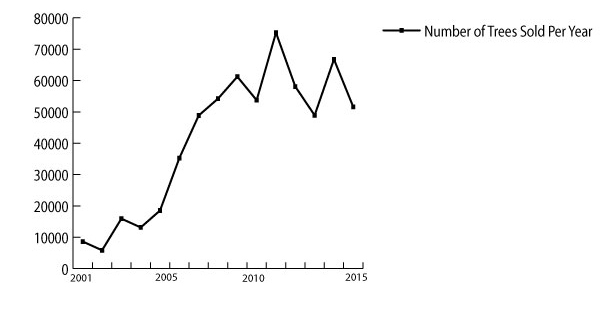

Kevin Pool walks along a tree he cut down, cutting off branches and the top half of the tree. This tree was cut at a logging site on the east side of Indianapolis, Indiana on Dec. 2, 2016. Pool is logging the land as a select cut, a process that involves selecting only certain trees to be harvested.
Unrest in the forest
Amid rising deforestation, a Brown County logger defends responsible practice.
Words By Alexa Chryssovergis
Photography by Noble Guyon
Multimedia by Anne Halliwell
When he finally saws through the last fibers, the great beast starts to fall.
Before the oak hits the ground, Kevin Pool drops the chainsaw and runs like hell in the opposite direction, boots crunching, body jolting. The tree hits the forest floor with a booming thud, and its branches thrash out, forcing leaves on the ground to burst in a flurry.
A grin breaks across Pool’s face. Out of harm’s way.
Kevin Pool runs from a falling trunk at a logging site near the east side of Indianapolis, IN on Dec. 2, 2016.Kevin Pool runs from a falling trunk at a logging site near the east side of Indianapolis, IN on Dec. 2, 2016.Pool is the last to move away from each tree as it tips over. The trees cut on Dec. 2 would be hauled away at a later date, when the ground was hardened by the frost.
Pool’s career has spanned 30 years and about 30,000 logged trees, but every time he cuts another big one, he still has to run. On this Friday morning in early December, Pool and another logger are felling trees in some woods outside of Indianapolis’ east side. But they’re not going to remove the logs today. Pool knows it’s too muddy to use his heavy equipment, for fear of ripping up the soft earth.
Being a logger, there’s always more to learn. Pool, 47, has to know how to cut timber so that its fall doesn’t crush smaller trees. He has to know how to operate his heavy, dangerous machinery, like bulldozers and grapple skidders. He has to know what different types of wood will be worth, how to identify a mature tree from a young one, how to clean up his messes when he’s done. He should be fit, and not too heavy, but not too scrawny, either.
“You gotta be part Tarzan, part Einstein, mostly Jesus Christ,” Pool says. “And if everything works out for you, you’ll survive.”
Throughout his career, Pool’s been trying to do the job as responsibly as he can. But these days, logging is more controversial than ever.
There’s a war raging over Indiana’s forests, and Pool’s in the middle.
Kevin Pool, a Nashville, IN logger, talks about the difficulties of working in the timber industry.Water pools in large ruts caused by logging machines at a logging site in Morgan-Monroe State Forest in Southern Indiana. Loggers use a vast amount of heavy equipment in their operations, such as bulldozers to cut roads in the forest and skidders to pull the cut trees out of the logged area.
The war is about politics, nature, money. Some want to preserve the forest’s beauty while others want to capitalize on its wealth. Some think the forest should be maintained and altered to help its growth while some others think it should be left untouched.
On one side, loggers tell tales of protesters throwing Coke cans at their heads, cussing them out, urinating on their expensive equipment.
On the other, protesters tell tales of their hikes being disrupted by ugly swaths of brown and gray devastation. They watch what is practically their backyard disappear before their eyes. They put their forest treks on hold while trails close for weeks at a time.
Since 2001, the Indiana Department of Natural Resources has been steadily increasing the amount of trees it sells to loggers to cut down. The money loggers pay for the trees at sales each year has increased fivefold, from slightly more than half a million dollars in 2001 to just less than three million dollars in 2015. The total number of trees sold in 2015 is almost six times as many as were sold less than two decades before.
The economic impact of Indiana’s forest and hardwood industry comes to a grand total of $13.5 billion, according to a June 2016 report done by the DNR Division of Forestry and the Indiana Department of Agriculture. In total, the industry employs 30,845 people.
Pool’s been around to watch the changes roll in.
Kevin Pool sharpens the teeth on his Husqvarna chain saw shortly before setting off to cut trees down at a logging site on the east side of Indianapolis, Indiana on Dec. 2, 2106. Pool has been logging for over 30 years out of Helmsburg, Indiana.
Ever since his father opened up Helmsburg Sawmill in 1973, Pool’s whole family has been a part of the profession. The mill, in Nashville, Indiana, and this job have been his entire life, and he’s been working as a logger full time since he was 17.
Some of the biggest changes he’s seen have come in the form of the politics. It’s the increase in the number of trees cut down in state forests, the DNR foresters who designate huge swaths of Indiana state forests for clearcutting, which is where loggers who contract with the DNR saw down every tree from one segmented bit of land rather than picking and choosing.
Pool and his crew don’t do excessive clearcuts or leave behind messes like inexperienced loggers may. He’s built a respectable name in this business.
Logging opponents say the changes began with past Indiana Gov. Mitch Daniels. After he was elected in 2004, Daniels decided to cut off state agencies’ funding and demand that they become self-sufficient, so the department turned toward one of Indiana’s best industries to keep themselves afloat.
Even the recent candidates for Indiana’s governor got involved in the sparring. Democrat John Gregg met with concerned forest advocates and declared the agency should halt and restructure its current strategic plan. But Republican Gov.-elect Eric Holcomb said he sees no problem with how the DNR manages the forest.
Pool said he tries to remain neutral about the politics because he doesn’t want to kick his own industry. But while he said he’s sure the DNR has reasons for their policies, he wouldn’t imitate some of those policies — like the excessive clearcuts in very visible, public places — in his own practice.
At Helmsburg, Pool does the logging, but his brother, Willy, is the mechanic. Their sister, Melanie, works the business side of the mill, managing the Facebook page and phone calls. And their dad, William, sits in a box and operates the mill for hours at a time. Even the kids’ mom, Susan, is there sometimes, bringing in tomatoes from their garden and tuna with crackers for lunch. It’s a full-on family affair.
The sawmill itself is filled with tons of heavy machinery. First there’s the mill, the constant grinding of which echoes through the entire clearing when William is working on cutting up logs. When he takes his breaks, the lack of the noise settles with a heavy and peaceful silence.
Sawdust and a deep, rich scent of wood creeps into every crevice of the place.
The mill uses everything they can from the wood Pool brings in. Even the scraps that other logging companies would deem unusable can be sold as firewood.
Pool gets jobs by word of mouth — “blessings from God,” he calls them.
Walking through one 20-acre swath of land in Nashville, it’s easy for Pool to point out the trees that are mature, bare and brittle, almost ready to fall over.
He points to one giant with dead limbs on the bottom.
“It’s not gonna grow any bigger,” Pool says. “It’ll keep other trees from growing bigger.”
Kevin Pool looks around for a moment at a logging site that he logged this fall near Snoddy Road in Bloomington, Indiana on Nov. 17, 2016. Pool has been logging for a majority of his life, working with his family at Helmsburg Sawmill in Helmsburg, Indiana.
He’s logged this bit of land twice in the past 15 years, and it’s just as thick and green as any other bit of woods. That’s because Pool prefers to do select cuts — where he picks and chooses the trees he wants to saw down rather than cutting a bunch at once.
Pool chooses trees that would soon fall on their own. It’s healthy for the forest. If the old, dying trees were left alone, they’d keep other, smaller trees from growing at all. When the giants are removed from the forest, more sunlight can filter through, which means more new growth.
Pool says he often brings potential clients out to this bit of land to show them his approach to the work. He also likes to show off log cabins made from his wood to his customers, and this property conveniently has one of those, as well. It’s picturesque, with the quaint cabin nestled just at the edge of the trees and the woods sloping gently down into peaceful darkness. There’s even a cat roaming around.
Brown County, Pool points out, used to be nothing but stumps around 100 years ago, when the forests were obliterated by clearcuts.
A century after the clearcut devastation, Brown County’s forests have finally grown back.
If trees grew like corn, it’d be no problem to chop them all down at once, Pool says.
But instead, they grow inch by inch, one ring per year.
Brown County, where Helmsburg Sawmill is located, was heavily logged about a century ago.
Dubois Ridge is ethereal in the sunlight. From the viewpoint of a driver speeding through, the Yellowwood State Forest road twists and turns, the sun filtering down through branches, glinting bright and then dimming as the trees filter the light.
Then, around another curve, there’s a bit of land that’s been clearcut, and the sudden emptiness is jarring. One thick side of the forest sharply falls away — tall, leafy trees changing to stumps, with a few dead giants here or there. To an untrained eye, it’s difficult to separate weeds from new tree seedlings. It looks swampy, almost like a wasteland.
David Seastrom climbs out of his car and starts to walk toward the clearcut. This bit of land was probably logged about two years ago, said Seastrom, an Indiana Forest Alliance member and advocate for the state forests, as he wades into the weeds.
Indiana Forest alliance representative David Seastrom stands and looks out on a logged tract of land in Yellowwood State Forest on Oct. 6. The section of the forest was logged nearly two years ago.Indiana Forest alliance representative David Seastrom stands and looks out on a logged tract of land in Yellowwood State Forest on Oct. 6. The section of the forest was logged nearly two years ago.Ruts from machinery and log scraps can be seen in front of a logged section of Yellowwood State Forest on Oct. 6, 2016. These are some of the effects that large logging companies leave on areas they log, according to David Seastrom, a member of the Indiana Forest Alliance.
The forest floor isn’t completely bare, as it likely was once the logging was first completed. On the outskirts, deep tire tracks still dig into the mud, but only a few steps into the land and the ground is already completely covered.
It’s tricky to walk even 20 feet without fear of falling into a hidden pothole or tripping over a concealed stump. Seastrom finds a surface to sit on, and settles down, foliage swaying at his eye-level.
Seastrom, 62, uses the same analogy that Pool does to describe the clearcut logging method: that managing logging for maximum profit is the “cornfield approach.”
When the DNR clears out an area of trees, it completely changes the ecology, Seastrom says. The entire food chain is disrupted.
“When you do one thing, it affects the next thing,” he says. “And the next thing, and the next thing.”
The forest’s workings, explained by Seastrom, are complex: equipment covered in mud from the last logging site can spread invasive species to the next site it’s taken to. Tracts off of Dubois Ridge are still bleeding topsoil.
Kevin Pool and his family are the example of responsible logging, Seastrom says. They rarely do clearcuts, and pay careful attention to their technique and the messes they leave behind.
“This isn’t about a bunch of tree huggers saying, ‘Oh, don’t cut anything,’” Seastrom says. “It’s not about being against change. It’s about not managing something sustainably for the future.”
The DNR has a strategic plan in place to best regrow places that have been recently logged. But there’s no enforcement of their management practices, Seastrom says. Who’s there to make sure the policies are carried out?
At the edge of the clearing, the old forest starts again, a dense green line that stretches toward the sky.
“What would it be like,” Seastrom says, “for our grandchildren to walk into a forest with 200-year old trees?”
When a logger buys a slot of land from an Indiana state forest, the exchange starts with an auction.
The way it works is quiet. There’s no excitement of bidders calling out over each other, raising the price. Logging companies simply must submit their bids beforehand, handing them in envelopes to the foresters in charge.
On Sept. 13, the auction started at 9 a.m. sharp.
A small group of loggers, five or six, was gathered at the DNR office in Jackson-Washington State Forest, competing for three separate bits of land within the forest. Their candor was cordial, though; competitors in the business, but also friends who understand the work.
Billy Trueblood, whose wife, Sherry, was there representing their business that day, won the first bid for $116,100.
Through the auction, one logger named Max Lambring sat toward the back of the room, quietly grumbling loud enough for the DNR employees to overhear.
“Too many poles,” he said over and over, referring to the thinness of the trees that were being sold.
All the thin pines were too small for his liking — worthless, he said. They weren’t like the thick, old trees that Kevin chops down, one by one, when they’re good and ready.
(Left)Sawdust blows up as Kevin Pool cuts a wedge out of a tree to help direct where the tree will fall at a logging site in on the east side Indianapolis, Indiana on Dec. 2, 2016. Pool says he tries to cut the trees to fall where they will minimize harm to other trees around them.
(Below) Loggers Gary Watkins, left, and Kevin Pool tighten and sharpen the blade of the chainsaw after falling a tree. Pool is meticulous about his chainsaw, stopping almost every time he cuts a tree to tighten the blade and every several trees to re-sharpen the blades. Using a dull saw is dangerous and inefficient, Pool said.
Gary Watkins tightens the blade of the chainsaw after Kevin Pool cut down a tree. The duo sharpen tighten and sharpen the blade frequently when cutting trees. It helps ensure a smooth, safe and fast cut, Pool said.Gary Watkins tightens the blade of the chainsaw after Kevin Pool cut down a tree. The duo sharpen tighten and sharpen the blade frequently when cutting trees. It helps ensure a smooth, safe and fast cut, Pool said.Kevin Pool stands on top of a tree he cut down minutes before. After Pool cuts a tree down he cleans up the trunk and cuts the head off the tree, leaving only the best parts of wood to be processed. The tops are left and provide habitat for animals in the forest, Pool said.
Since he was a kid, Lambring has been in the business. To keep up with his bills, he sells equipment on the side, in addition to his logging. In this business, you ain’t really getting ahead in life,” he said.
Lambring, like Pool, has had his equipment vandalized. Someone broke through its windows and poured dirt inside.
“That’s a lot of money whenever you’ve gotta deal with that,” Sherry Trueblood said to Lambring, nodding sympathetically.
Frustrations about protesters stretch up to the highest levels of management within the DNR. John Seifert, state forester and director of the DNR, said those opposed to the current forest management are generally uneducated about how exactly the department operates.
Sales from All State Forest Auctions 2001-2015
Timber sales in Indiana have increased in the last decade and a half, from less than 10,000 trees sold and logged in 2001 to more than 75,000 in 2013. The Indiana Department of Natural Resources adopted ta timber management plan in 2005 that calls for 60 percent of annual growth, 14 million board feet, to be logged. https://www.in.gov/dnr/forestry/files/fo-State_Forest_Strategic_Plan_2015_2019.pdf

Indiana Forest alliance representative David Seastrom stands and looks out on a logged tract of land in Yellowwood State Forest on Oct. 6. The section of the forest was logged nearly two years ago.Indiana Forest alliance representative David Seastrom stands and looks out on a logged tract of land in Yellowwood State Forest on Oct. 6. The section of the forest was logged nearly two years ago.Data from DNR Forestry Records, compiled by IU Media School
Many who object to clearcuts in the state forest don’t understand some of the scientific reasons behind these harvests, he said.
At Helmsburg, the Pools only have to worry about themselves, about keeping their business afloat. If they don’t like the idea of clearcuts because of the poor aesthetic value, then that’s their prerogative.
State foresters have other things to worry about, Seifert said.
Foresters have to worry about the science of the forest, the health of the forest. They’re taught in school how to most efficiently manage nature’s resources.
Of the 4,000 to 5,000 acres of wood the DNR harvests each year, about 400 to 500 of those acres are clearcuts, Seifert said — so, about 10 percent.
Foresters evaluate the needs of the forest and make case-by-case assessments about how the wood should be cut — selectively, or all at once.
Seifert said 100 percent of what the DNR does is based on scientific analysis, and the monetary value of the trees cut down is not even the secondary or tertiary consideration when determining which wood should go and which should stay.
He doesn’t deny that the DNR has increased logging in the past decade. But the department has always maintained openness about their policies, he said.
“We’ve not hidden anything we’ve done in the past,” Seifert said. “We were probably way too conservative. Now we’re actually trying to do what we should’ve been doing a long time ago.”
Seifert says this because trees in the forest are dying at a quick rate, all on their own. The DNR shoots to harvest 10-12 million board feet of wood per year, he said. But soon, the department will release a report with numbers that show the forest also has 10 million board feet of mortality per year.
Many trees recently have been falling victim to the emerald ash borer, a beetle that infests and kills ash trees.
“We’re losing almost as much as we’re cutting,” Seifert said.
Jim Eagleman, retired DNR naturalist, sees two main schools of thought in the logging controversy. On the one side, there are the conservationists — people like Seifert, people who work to best use the materials naturally provided to them and intercede in the forest. And on the other, there are the preservationists, who he sees as people who want to lock up the forest’s resources.
“If the resource is there, it can be used wisely for future generations,” Eagleman said.
From his point of view, there’s no danger that the trees will disappear over the next few decades. The DNR knows what they’re doing, he said, and we should trust them. They have degrees and follow carefully laid out scientific practices.
Eagleman said when Mitch Daniels was elected, he noticed an untapped resource in the state forests, and decided to capitalize on it as his predecessors had not.
“I suspect he saw dollar signs in his eyeballs and said, here’s timber, we can use this,” Eagleman said.
There are reasons for doing clearcuts other than just making money, Eagleman said. The forester could be choosing to remove dying pine not normally native to a particular bit of land, but planted to save the soil. Or he could be removing all even-aged trees. Seifert said the forester could also decide to wipe out a bit of land with a species in decline and plant some new seeds to regenerate that bit of the forest.
Regardless of the reasons, people will always scrutinize, Seifert said. True professionals, he said, will let science guide them in the decisions they make regarding the forest. The downside is that these decisions aren’t always very aesthetically pleasing.
“We manage to the best we can based on the best science we have. Doesn’t mean everybody agrees with us,” Seifert said. “Some days are really frustrating.”
Kevin Pool says he doesn’t want to judge other loggers. He doesn’t want to pretend that he knows more than they do, because he doesn’t.
He logs the way that feels right to him.
“Have I been successful at it?” he asks out loud. “I suppose, because I’m not dead.”
A Helmsburg Sawmill truck being used to transport firewood sits in the distance at a logging site near Snoddy Road in Bloomington, Indiana on Nov. 17, 2016. This section of the property was clear cut by Kevin Pool at the owner's request, who is planning on buliding a home on the land, Pool said.Firewood sits stacked in a truck at a logging site near Snoddy road in Bloomington, Indiana on Nov. 17, 2016. Helmsburg Sawmill utilizes the wood they log from sites not only for lumber, but also sawdust, mulch and firewood.
On a sunny Thursday afternoon, he walks down a hill into a section of woods just outside Bloomington.
The landowners wanted him to make a clearing so they could build a house back in the woods, so he did the job he was asked to do.
The Pool family possess something of a reverence for trees and their products. All of them live close to each other in their own, personally crafted log cabins.
Since he was 17, it’s been Kevin and the woods. Sometimes, when Pool’s out doing a tree inventory, it’s just him and the trees, leaves rustling in the wind.
When he cuts down the giants, he trims off their branches and leaves them behind.
“It’s good habitat,” he’s saying. “Lets other seedling germinate.”
He trails off, turning away from his audience. He does this often, even if there’s someone else with him in the woods. It’s almost as if he’s speaking right to the trees.
Kevin Pool, center, and Gary Watkins look up at the canopy for the next tree to cut at a logging site on the east side of Indianapolis, Indiana on Dec. 2, 2016. "I'm always looking up," Pool said. "You see that? That's what they call a widow maker."